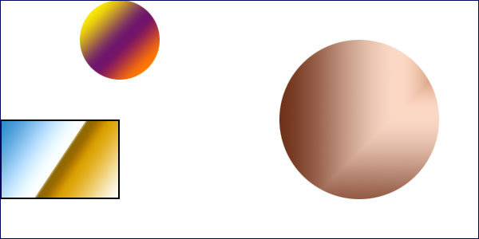

图片自定义区域
area标签用于在图片上标定一块区域，对应某一个链接。点击的时候会显示outline，点击下面的图形会显示信息。

表格列样式控制
col元素放在表格中，可以布置表格列的基本布局，否则表格的宽度以制表符的匹配数量拓展。
| ISBN | Title | Price |
| 3476896 | My first HTML | $53 |
进度条
下面是两种可以表示进度的写法：
area标签用于在图片上标定一块区域，对应某一个链接。点击的时候会显示outline，点击下面的图形会显示信息。
col元素放在表格中，可以布置表格列的基本布局，否则表格的宽度以制表符的匹配数量拓展。
| ISBN | Title | Price |
| 3476896 | My first HTML | $53 |
下面是两种可以表示进度的写法：